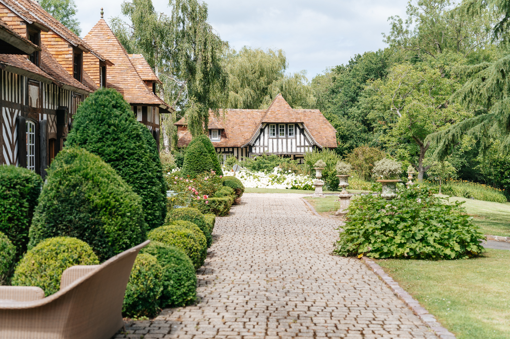
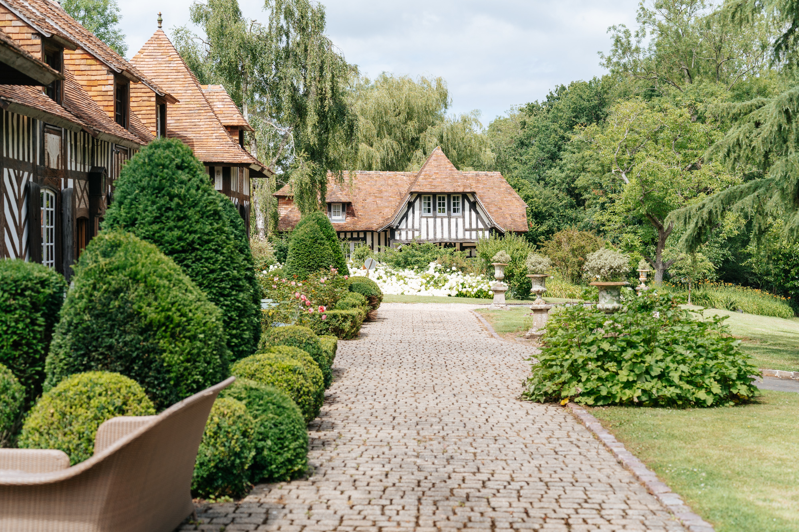

Célébrez un amour intemporel en Normandie
Orangerie baignée de lumière, jardins paysagers et hébergements de charme — un cadre élégant et flexible pour un week-end inoubliable.
Le Domaine
Au cœur du Pays d’Auge, en Normandie, le Domaine de Barneville vous accueille dans un écrin de verdure où histoire et élégance se conjuguent à merveille. Cette propriété à colombages datant du XVIIe siècle est entourée d’un parc arboré de 11 hectares, offrant un cadre à la fois paisible, romantique et raffiné pour célébrer le plus beau jour de votre vie.
Le domaine se prête à toutes les envies : mariage champêtre, chic, bohème ou classique, en intérieur comme en extérieur. Chaque instant devient inoubliable dans ce lieu empreint de charme et de sérénité.
Espaces et capacités. Le Domaine de Barneville dispose de plusieurs espaces extérieurs magnifiquement aménagés, ainsi que d’une superbe orangeraie lumineuse pouvant accueillir jusqu’à 150 convives assis. Ce lieu à l’architecture élégante est idéal pour vos repas, vos soirées dansantes ou vos cérémonies abritées. Le domaine permet de nombreuses configurations sur mesure : cocktail dans le parc, cérémonie laïque en plein air, dîner sous l’orangeraie… Tout est pensé pour créer un mariage à votre image.
Équipements inclus :
- Orangeraie jusqu’à 150 personnes
- 10 mange-debout
- Tables rondes (150 cm – 8 à 10 personnes)
- Chaises
- Parking privé
- Sanitaires, dont un avec accès handicapé
Une tente stretch supplémentaire de 240 m² est disponible à la location pour agrandir l’espace si nécessaire. Un système de chauffage est également proposé selon la saison.
Prestations. Le domaine est entièrement privatisé, que ce soit en semaine ou le week-end. Aucune limite horaire ne vous est imposée : vous avez toute la liberté de vivre chaque moment à votre rythme. L’équipe du Domaine de Barneville vous accompagne tout au long des préparatifs avec écoute et bienveillance. Nous mettons également à votre disposition une liste de prestataires recommandés (traiteurs, fleuristes, DJ, barman, décorateurs…) pour vous faciliter l’organisation.
Hébergements. Le domaine comprend un manoir et son annexe permettant de loger jusqu’à 15 personnes. Chaque chambre allie le charme de l’ancien au confort moderne et dispose de sa propre salle de bain. Le domaine est situé dans une région touristique, avec de nombreux hôtels et hébergements Airbnb à proximité, permettant à vos invités de trouver facilement une solution adaptée.
Tennis privé. Le domaine dispose également d’un court de tennis récemment rénové, qui pourrait être utilisé pour un tournoi de tennis pour vos invités, ajoutant un aspect sportif et ludique à votre événement.
Localisation. Le Domaine de Barneville bénéficie d’un emplacement idéal :
- À 5 km de Honfleur
- À 8 km de Deauville-Trouville
- À 170 km de Paris, accessible en voiture ou en train
Autres atouts :
- Disponible toute l’année
- Exclusivité du domaine pour chaque événement
- Cadre historique unique et atmosphère bucolique
- Flexibilité des espaces pour un événement 100 % personnalisé
Espaces modulables
Cérémonie laïque, cocktail au jardin, dîner sous verrière.
Sans limite horaire
Privatisation du domaine et pas de voisinage immédiat.
Prestataires de confiance
Réseau local trié sur le volet, ou vos prestataires.


{kind=link}
{kind=link}
Obtenir un devis
Questions fréquemment posées
Combien coûte la location d'un lieu de réception pour un mariage chez Domaine de Barneville ?
Chez Domaine de Barneville, vous pouvez louer un lieu de réception pour un mariage, à partir de 4 500€, et cela peut être personnalisé (par exemple, disponible également en paiement échelonné). N'hésitez pas à nous contacter, nous serons heureux de discuter des détails avec vous.
De quelles installations pour la célébration de mariages dispose Domaine de Barneville ?
Domaine de Barneville dispose des installations et espaces suivants pour la célébration de mariages :
- Terrasse
- Jardin
- Cuisine
- Piste de danse
- Parking
- Espace spécialement conçu pour le traiteur, situé à côté de l'Orangerie
- Chapiteau
- Espace pour une cérémonie civile
- Autre (Court de tennis)
Quels services propose Domaine de Barneville pour l’organisation de mariages ?
Domaine de Barneville propose les services suivants pour des mariages :
- Banquet
- Cérémonie
- Autres (Nous proposons la location du domaine pour vos événements. Vous êtes libre de choisir vos prestataires, mais nous pouvons vous recommander des prestataires de confiance avec lesquels nous travaillons régulièrement.)
Quelles configurations propose Domaine de Barneville pour la réception ?
Domaine de Barneville propose les configurations suivantes :
- Debout
- Assis
Quels types de réception propose Domaine de Barneville ?
Les différents types de réceptions proposées par Domaine de Barneville sont :
- Réception
- Vin d'honneur
- Buffet
- Dîner
- Apéritif
Combien de personnes peuvent bénéficier des services de Domaine de Barneville pour la réception de mariage ?
Domaine de Barneville propose ses services de réception de mariage pour un maximum de 170 invités.
Quel pourcentage d'utilisateurs recommande Domaine de Barneville et quels sont les aspects les mieux notés des services de mariage proposés par le prestataire ?
Domaine de Barneville est recommandé par 100% des couples qui ont fait appel au service de ce prestataire. Sa note globale est de 5.0 et il a obtenu cette note pour la qualité de son service, sa flexibilité, son rapport qualité-prix, son professionnalisme et son temps de réponse.
Quelles sont les promotions offertes par Domaine de Barneville concernant les services de mariage ?
Actuellement, Domaine de Barneville ne propose pas de promotions, mais offre des prix spéciaux pour la haute et la basse saison.
Y a-t-il une liste de dates de mariage disponibles ?
Nous ne fournissons pas actuellement de liste fixe des dates disponibles. Veuillez remplir le formulaire, et nous reviendrons vers vous dès que possible pour vérifier la disponibilité de la date que vous souhaitez.
Combien de temps pouvons-nous louer Domaine de Barneville pour notre mariage ?
Nous louons généralement Domaine de Barneville pour un week-end entier. Cependant, si vous souhaitez le louer pour une période différente, nous pouvons en discuter et l'arranger individuellement.
Quand pouvons-nous commencer à installer et décorer ?
L'heure d'installation et de décoration peut être arrangée individuellement après discussion avec nous. Nous sommes flexibles et trouverons une solution qui vous conviendra.
Devrons-nous nous occuper du démontage ou est-ce inclus dans le service ?
Le démontage doit être effectué par vos soins, mais nous avons de bons contacts avec des prestataires fiables que nous pouvons vous recommander pour faciliter cette étape.
Y a-t-il suffisamment de places de parking pour tous nos invités ?
Oui, nous disposons d'un très grand parking, offrant amplement d'espace pour tous vos invités.
Domaine de Barneville propose-t-il un service de navette pour les invités qui ne peuvent pas venir en voiture ?
Malheureusement, nous ne proposons pas de service de navette, mais nous pouvons vous référer à des prestataires appropriés qui peuvent gérer le transport pour vos invités.
Domaine de Barneville est-il facilement accessible en transports en commun pour les invités venant de loin ?
Domaine de Barneville est facilement accessible : l'aéroport de Deauville est à seulement 10 minutes, et la gare principale de Deauville-Trouville propose des connexions directes depuis Paris. Alternativement, vos invités peuvent prendre un vol pour les aéroports CDG ou Orly à Paris, qui se trouvent à environ 2,5 heures.
Qu'est-ce qui est inclus dans le prix de la location ? Le catering et les boissons sont-ils inclus ou doivent-ils être réservés séparément ?
Le catering et les boissons ne sont pas inclus dans le prix de location et doivent être organisés séparément. Cependant, nous serons heureux de vous aider à trouver un excellent traiteur grâce à nos contacts et recommandations.
Proposez-vous différents forfaits de mariage et qu'est-ce qui est inclus dans chaque forfait ?
Nous ne proposons pas actuellement de forfaits fixes de mariage. Nous travaillons avec vous pour créer le forfait parfait, adapté à vos besoins. Faites-nous savoir ce que vous recherchez, et nous vous aiderons à le réaliser !
Proposez-vous des services supplémentaires comme un planificateur de mariage ou un service de décoration ?
Nous ne proposons pas de planificateur de mariage ou de services de décoration en interne, mais nous pouvons vous recommander des partenaires fiables avec lesquels nous avons eu de bonnes expériences.
Que se passe-t-il si le jour de notre mariage il pleut ? Y a-t-il une solution en cas de mauvais temps pour la cérémonie ou la réception ?
En cas de mauvais temps, nous proposons des tentes étanches, de sorte que votre cérémonie et votre réception puissent avoir lieu sans souci. Un petit conseil : c'est le charme de la Normandie – la pluie fait partie de l'expérience !
Pouvons-nous utiliser la tente pendant la basse saison, ou est-elle uniquement disponible en haute saison ?
La tente est disponible toute l'année, y compris pendant la basse saison. Si vous planifiez un mariage d'hiver ou un événement à une autre période de l'année, nous pouvons l'organiser pour vous.
Pouvons-nous apporter nos propres décorations ou y a-t-il des restrictions sur la décoration ?
Bien sûr, vous pouvez apporter vos propres décorations ! Nous souhaitons que votre mariage soit aussi personnalisé que possible et sommes ravis si vous apportez vos touches personnelles.
Avez-vous des recommandations pour un fleuriste, un photographe ou un DJ ?
Oui, nous avons une bonne vue d'ensemble des prestataires de la région avec lesquels nous avons travaillé régulièrement. Si vous le souhaitez, nous pouvons vous recommander des fleuristes, photographes, DJ et autres prestataires pour rendre votre mariage inoubliable.
Y a-t-il des restrictions concernant l'éclairage ou la musique, comme le volume ou la conception de l'éclairage ?
Il n'y a pas de restrictions concernant l'éclairage ou la musique – vous pouvez créer l'ambiance comme vous le souhaitez. Il n'y a pas de limites de volume, et vous pouvez personnaliser l'éclairage et la musique à votre guise.
Y a-t-il des hôtels ou des hébergements à proximité pour nos invités ?
Oui, comme Domaine de Barneville est situé dans une région touristique populaire, il y a de nombreux hôtels et hébergements à proximité. Nous pouvons également vous fournir une liste de recommandations si vous le souhaitez.
Domaine de Barneville propose-t-il des hébergements ou des logements pour la nuit ?
Oui, nous proposons des hébergements pour vos invités. Nous serions ravis de vous communiquer les options disponibles et de vous aider à trouver les meilleurs hébergements.
Pouvons-nous apporter notre propre gâteau de mariage ?
Oui, vous pouvez apporter votre propre gâteau de mariage. Nous voulons que votre mariage soit parfait et nous vous soutiendrons de toutes les manières possibles !
Y a-t-il des restrictions concernant le volume de la musique ou de la fête ?
Non, il n'y a aucune restriction concernant le volume de votre fête. Vous pouvez célébrer aussi fort que vous le souhaitez – Domaine de Barneville offre suffisamment d'espace pour une fête sans souci !
Jusqu'à quelle heure pouvons-nous célébrer ? Y a-t-il une heure limite ?
Il n'y a pas d'heure limite ! Vous pouvez célébrer aussi longtemps que vous le souhaitez – nous voulons que votre mariage soit inoubliable sous tous ses aspects.
Comment Domaine de Barneville gère-t-il les précautions de sécurité ?
Domaine de Barneville prend toutes les précautions de sécurité nécessaires pour que votre événement se déroule de manière sûre et fluide. Il y a toujours une personne de contact sur place pour vous aider avec toute question liée à la sécurité.
Pouvons-nous organiser une cérémonie religieuse ou culturelle chez Domaine de Barneville ?
Oui, nous offrons la possibilité d'organiser une cérémonie religieuse ou culturelle selon vos souhaits. Qu'il s'agisse d'une cérémonie civile ou traditionnelle – nous vous accompagnons pour réaliser le mariage de vos rêves.
Quelle est la disponibilité des équipements techniques (haut-parleurs, micros, projecteurs, etc.) ?
Domaine de Barneville vous fournit des branchements électriques et d'eau, mais les haut-parleurs, micros et projecteurs doivent être loués auprès de prestataires externes. Nous serons heureux de vous mettre en relation avec les bons contacts pour cela.
Qui est la personne de contact sur place ?
Nous nous assurons qu'il y ait toujours une personne de contact sur place qui vous assistera pendant la planification et lors de l'événement. Vous n'aurez à vous soucier de rien – nous sommes là pour vous !